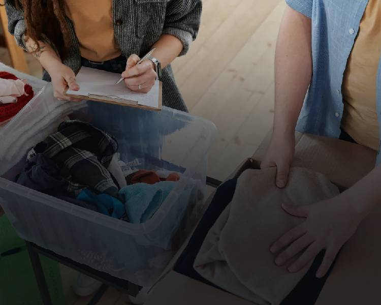

Sortering

Sortering

Sortering
Status og data
Om frivilligarbejdet
Frivillig i genbrug
Røde Kors butikker drives af engagerede frivillige, der ønsker at gøre en forskel for andre. Derfor går overskuddet fra butikkerne til hjælpearbejdet for de, der har mest behov. Herhjemme og ude i verden. Som frivillig i en Røde Kors Butik bliver du en del af et hyggeligt fællesskab, hvor der altid er tid til en kop kaffe og en snak.
Frivillig
Uanset hvilken opgave du tager ansvar for, gavner det dem, som rødekors hjælper i Danmark og Verden.
Sted
Røde Kors Genbrug, Odense
Næste tidspunkt
Tirsdag kl. 10-13
Info
Du kan regulere ud fra hvor mange timer du har at arbejde med.